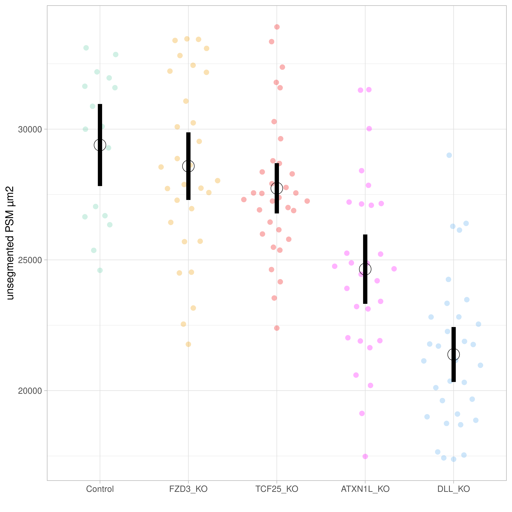
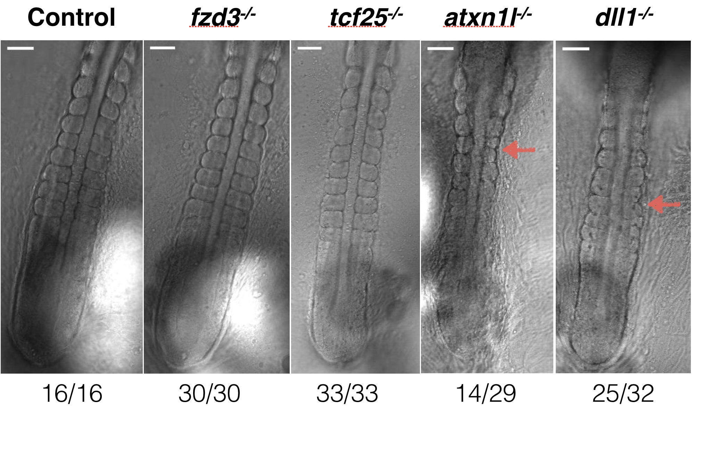

Finally, we used the called recombination blocks as pseudo-SNPs in an F2-cross GWAS. To detect associations between the pseudo-SNPs and the two phenotypes of interest, we used a linear mixed model (LMM) as implemented in GCTA (Yang et al. 2011). For the genetic relationship matrix (GRM), we additionally used the leave-one-chromosome-out implementation of GCTA’s LMM, with excludes the chromosome on which the candidate SNP is located when calculating the GRM. A GRM constructed from the entire genome is presented as a heatmap in Figure 6.1, with each sample represented on each axis, and lighter colours representing a higher degree of relatedness between a pair of samples. The square in the top right-hand corner is created by samples ~550-648, which, based on Figure 5.4 above, clearly have distinct genotypes to the rest of the samples due to their having been bred from different F1 parents.
Code
# Load librarieslibrary(tidyverse)library(genio)# Set variablesIN_PREF ="/hps/nobackup/birney/users/ian/somites/beds/F2/hdrr/None/5000/0.8"LOW_COV =c(26, 89, 166, 178, 189, 227, 239, 470, 472, 473, 490, 501, 502, 503, 504, 505, 506, 507, 508, 509, 510, 511) %>%as.character()# Read in files## Read bedfam = genio::read_fam(IN_PREF)bim = genio::read_bim(IN_PREF)df_genos = genio::read_bed(IN_PREF,names_loci = bim$id,names_ind = fam$id) %>%as.data.frame()# Get indexes of all non-low coverage samplesind_keep =which(!as.character(fam$id) %in% LOW_COV)# Filter out low-cov samples from `fam` and `df_genos`df_genos = df_genos[, ind_keep]fam = fam %>% dplyr::filter(!id %in% LOW_COV)# Convert genos to matrixx = df_genos %>%# transposet(.) %>%# convert back to data frameas.data.frame(.)# Compute GRM "manually"# Following guidance here: https://zjuwhw.github.io/2021/08/20/GRM.htmln =dim(x)[1]m =dim(x)[2]# For each SNP, sum the ALT alleles and divide by 2n to get the ALT allele frequencyp_hat =apply(x, 2, sum)/(2*n)# Standardise matrix by allele frequencyw =apply(rbind(x,p_hat), 2, function(x) (x-2*x[length(x)])/sqrt(2*x[length(x)]*(1-x[length(x)])))[1:n,]# Cacluate the GRMA = w %*%t(w) / m########################## Plot GRM########################## Orderord =hclust(dist(A, method ="euclidean"), method ="ward.D")$order#labs = rownames(A)[ord]## Get labs with cross#labs_x = tibble(SAMPLE = labs) %>% # dplyr::left_join(f2 %>% # dplyr::select(SAMPLE, PAT_MAT),# by = "SAMPLE") %>% # # combine# dplyr::mutate(S_X = paste(SAMPLE, PAT_MAT, sep = "_"))# Order matrixA_ord = A[ord, ord]# Convert to DFdf_fig = A_ord %>%as.data.frame() %>% tibble::rownames_to_column(var ="SAMPLE_1") %>% tidyr::pivot_longer(-c(SAMPLE_1), names_to ="SAMPLE_2", values_to ="VALUE")fig = df_fig %>%ggplot() +geom_tile(aes(x = SAMPLE_1, y = SAMPLE_2, fill = VALUE)) +scale_fill_viridis_c(option ="plasma") +theme(aspect.ratio =1) +theme(axis.text.x =element_text(angle =90),axis.text =element_text(size =2)) +xlab("sample A") +ylab("sample B")fig
As described above in Chapter 2, the microscope used to image the embryos (either AU or DB) differed in heat by 0.7-0.8°C, which likely caused differences in the measurements observed. In an attempt to avoid complications resulting from its inclusion, we inverse-normalised the period phenotype within each microscope group, transforming the phenotype to fit a normal distribution across both microscopes (displayed in Figure 2.5). We only show the results from this transformed phenotype in the following section.
To set the significance threshold, we permuted the phenotype across samples using 10 different random seeds, together with all covariates when included, and ran a separate linkage model for each permutation. We then set the lowest \(p\)-value from all 10 permutation as the significance threshold for the non-permuted model. We additionally applied a Bonferroni correction to our \(p\)-values by dividing \(\alpha\) (0.05) by the number of pseudo-SNPs in the model, and set this as a secondary threshold.
6.2 Period intercept
Figure 6.2 is a Manhattan plot of the genetic linkage results for the period intercept phenotype, inverse-normalised within microscopes as shown in Figure 2.5. The regions found to be significant based on the permutations’ minimum \(p\)-value are set out in Table 6.1.
Table 6.1: Significant 5-kb bin ranges for period intercept below the minimum p-value from 10 permutations.
Chromosome
Bin start
Bin end
Length (kb)
3
31880001
35420000
3540
4
18090001
18095000
5
10
2995001
3690000
695
These regions contained a total of 46,872 SNPs imputed from the genotype of the F0 parental strains. We ran Ensembl’s Variant Effect Predictor (McLaren et al. 2016) over these SNPs to identify those that would be most likely to have functional consequences. The full counts of SNPs falling into each category of ‘consequence’ are set out in Table 6.2. From this process we identified 38 genes that included a missense variant, 1 that included a missense variant and a start lost (ENSORLG00000014616), and 1 that included a missense variant and a stop lost (ENSORLG00000015149).
Table 6.2: Variant Effect Predictor results for SNPs in the bins.
Consequence
Count
intron variant
47211
intergenic variant
20045
upstream gene variant
7304
downstream gene variant
5229
3 prime UTR variant
1082
synonymous variant
694
missense variant
383
5 prime UTR variant
201
splice region variant,intron variant
126
missense variant,splice region variant
19
splice region variant,synonymous variant
17
stop gained
3
splice donor variant
1
start lost
1
stop lost
1
stop lost,splice region variant
1
We then combined these results with bulk RNA-seq that they had performed on F0Cab and Kaga individuals, to determine which of these genes are expressed in the tail during embryogenesis. This allowed us to reduce to the list to 29 genes, and a gene ontology analysis of this found that the list of genes was enriched for body axis, somitogenesis, and segmentation (see table below). Using this list of genes, we are now in the process of knocking out the Cab allele in the Cab her7venus background to functionally validate whether any of these genes plays a role in setting the tempo of the segmentation clock.
We have since begun the process of using the CRISPR-Cas9 system (Campenhout et al. 2019) to knock out some of these candidate genes to determine their effect on the period phenotype. The mespb (ENSORLG00000014656) and pcdh10b (ENSORLG00000020474) genes have both been found to be involved in segmental boundary formation and somite patterning (Hitachi et al. 2008; Rangarajan, Luo, and Sargent 2006), and are highly conserved in vertebrates (Gul et al. 2017; Satou, Imai, and Satoh 2004). Preliminary results have shown that knocking out either of these genes from the Cab strain significantly speeds up somite period development by 2-3 minutes (Figure 6.3 and Figure 6.4)), providing promising evidence that these genes are involved in the establishment of the segmentation clock.
Figure 6.3: Period intercept for Cab embryos with CRISPR-Cas9 knock-outs (Campenhout et al. 2019) of mespb and pcdh10b compared to controls. Figure generated by Ali Seleit.
Figure 6.4: Mean period for Cab embryos with CRISPR-Cas9 knock-outs (Campenhout et al. 2019) of mespb and pcdh10b compared to controls. Figure generated by Ali Seleit.
6.3 PSM area
Figure 6.5 is a Manhattan plot of the genetic linkage results for the PSM area phenotype. The regions found to be significant based on the permutations’ minimum \(p\)-value are set out in the table below, although they exceed the Bonferroni correction threshold as well. I note that this ~6 Mb significant region on chromosome 3 does not overlap at all with the significant region discovered for the period intercept phenotype.
Figure 6.5: Manhattan plot of the genetic linkage results for the PSM area phenotype. Pseudo-SNPs with \(p\)-values lower than the permutation significance threshold are highlighted in yellow.
This region contained a total of 29,096 SNPs imputed from the genotype of the F0 parental strains. I ran Ensembl’s Variant Effect Predictor (McLaren et al. 2016) over these SNPs to identify those that would be most likely to have functional consequences. The full counts of SNPs falling into each category of ‘consequence’ are set out in the table below.
From this process we identified 114 genes that included a missense variant, and 5 that included a both a missense variant and a splice region variant:
We then combined these results with bulk RNA-seq that they had performed on F0Cab and Kaga individuals, to determine which of these genes are expressed in the unsegmented tail during embryogenesis. This allowed us to reduce to the list to 96 genes, although they were not apparently associated with a specific gene ontology as perhaps expected, given this is a single locus that is potentially driven by just one gene. As with the period intercept phenotype, we are now in the process of knocking out the Cab allele in the Cab her7venus background to assess if any of these genes play a role in determining the size of the PSM and to functionally validate the hits.
Two of these genes have shown a phenotype of reduced PSM area, segment boundary problems, and segment size (Figure 6.6 and Figure 6.7). The first, dll1, is a known player in somitogenesis. The second, atxn1l, has not been associated with somitogenesis before, but is a negative regulator of Notch signalling in mice and Drosophila (noting that Notch is a major player in segmentation in all vertebrates).

Figure 6.6: Unsegmented PSM area for Cab embryos with CRISPR-Cas9 knock-outs (Campenhout et al. 2019) of fzd3, tcf25, atxn1l and dll compared to controls. Figure generated by Ali Seleit.

Figure 6.7: Illustrative images of differences in somite segmentation for Cab embryos with CRISPR-Cas9 knock-outs (Campenhout et al. 2019) of fzd3, tcf25, atxn1l and dll1 compared to controls. The atxn1l and dll1 knock-outs show reduced PSM area, segment boundary problems, and segment size. Figure generated by Ali Seleit.
Campenhout, Claude Van, Pauline Cabochette, Anne-Clémence Veillard, Miklos Laczik, Agnieszka Zelisko-Schmidt, Céline Sabatel, Maxime Dhainaut, Benoit Vanhollebeke, Cyril Gueydan, and Véronique Kruys. 2019. “Guidelines for Optimized Gene Knockout Using CRISPR/Cas9.”BioTechniques 66 (6): 295–302. https://doi.org/10.2144/btn-2018-0187.
Gul, Ismail Sahin, Paco Hulpiau, Yvan Saeys, and Frans van Roy. 2017. “Evolution and Diversity of Cadherins and Catenins.”Experimental Cell Research, Cell Sensing and Signaling via Cell-Cell Adhesion, 358 (1): 3–9. https://doi.org/10.1016/j.yexcr.2017.03.001.
Hitachi, Keisuke, Hiroki Danno, Akiko Kondow, Kiyoshi Ohnuma, Hideho Uchiyama, Shoichi Ishiura, Akira Kurisaki, and Makoto Asashima. 2008. “Physical Interaction Between Tbx6 and Mespb Is Indispensable for the Activation of Bowline Expression During Xenopus Somitogenesis.”Biochemical and Biophysical Research Communications 372 (4): 607–12. https://doi.org/10.1016/j.bbrc.2008.05.083.
McLaren, William, Laurent Gil, Sarah E. Hunt, Harpreet Singh Riat, Graham R. S. Ritchie, Anja Thormann, Paul Flicek, and Fiona Cunningham. 2016. “The Ensembl Variant Effect Predictor.”Genome Biology 17 (1): 122. https://doi.org/10.1186/s13059-016-0974-4.
Rangarajan, Janaki, Ting Luo, and Thomas D. Sargent. 2006. “PCNS: A Novel Protocadherin Required for Cranial Neural Crest Migration and Somite Morphogenesis in Xenopus.”Developmental Biology 295 (1): 206–18. https://doi.org/10.1016/j.ydbio.2006.03.025.
Satou, Yutaka, Kaoru S. Imai, and Nori Satoh. 2004. “The Ascidian Mesp Gene Specifies Heart Precursor Cells.”Development 131 (11): 2533–41. https://doi.org/10.1242/dev.01145.
Yang, Jian, S. Hong Lee, Michael E. Goddard, and Peter M. Visscher. 2011. “GCTA: A Tool for Genome-wide Complex Trait Analysis.”The American Journal of Human Genetics 88 (1): 76–82. https://doi.org/10.1016/j.ajhg.2010.11.011.